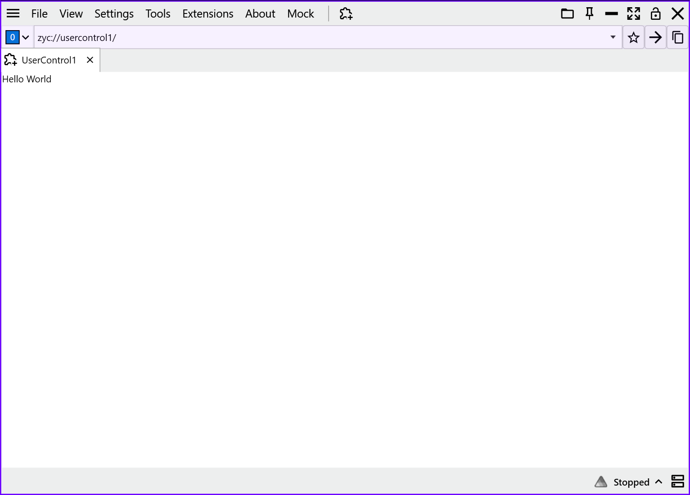

English | 日本語 | 简体中文 | 繁體中文 | 한국어 |
🚀 クイックスタート: ZYC.Framework Host を始める
このガイドでは、ZYC.Framework Host プロジェクトを一から作成する手順を説明します。NuGet でフレームワークを導入し、モジュール機構（Module + UserControl）を使って独自 UI をホスト環境に組み込む方法を学びます。🛠️
推奨: dotnet tool で作成する
ZYC.Framework CLI ツールをインストール、または更新します:
dotnet tool install --global ZYC.Framework.CLI --version 1.4.0
# すでにインストール済みの場合:
dotnet tool update --global ZYC.Framework.CLI --version 1.4.0
最小構成の Host プロジェクトを作成します:
zyc new WpfApp1
既定のプロジェクト テンプレートは minimal です。これは下の手動手順と同じ Host 構成を生成します。テンプレートを明示することもできます:
zyc new WpfApp1 --template minimal
Entry プロジェクト、モジュール プロジェクト、Abstractions プロジェクトを含むソリューションが必要な場合は modular を使います:
zyc new MyCompany.Tools --template modular
よく使うオプション:
zyc new MyCompany.Tools --output ./MyCompany.Tools --package-version 1.4.0
生成されたソリューションまたはプロジェクトを開き、スタートアップ プロジェクトに設定してデバッグを開始します。生成済みファイルには、パッケージ参照、Module.cs、ModuleConfig.json、初期ビューが含まれています。
手動作成方法
以下は、Host プロジェクトを手作業で作成したい場合の同等手順です。
1. 🧱 プロジェクトの作成と前提条件
- プロジェクトを作成: .NET 10 を対象にした新しい WPF Application を作成します（例:
WpfApp1）。✨ - NuGet パッケージを追加: NuGet パッケージ マネージャーからコア パッケージ
ZYC.Framework.Alphaをインストールします。📦
<ItemGroup>
<PackageReference Include="ZYC.Framework.Alpha" Version="1.4.0" />
</ItemGroup>
- 既定のエントリ ポイントを整理: 🧹
フレームワークは独自の統一エントリ ポイント (
Entry.cs) を提供します。テンプレートが生成した次の既定ファイルは 必ず削除 してください:
App.xamlApp.xaml.cs
Important
⚠️ 重要: App.xaml を削除しないと、グローバル エントリ ポイントが競合します。アプリケーションの起動処理はフレームワークが全面的に管理します。
2. ⚙️ アセンブリ参照の設定
ホストが抽象化インターフェイスを正しく認識して読み込めるように、.csproj ファイルに Abstractions アセンブリ参照を手動で追加します。🔗
<ItemGroup>
<Reference Include="ZYC.Framework.Abstractions">
<HintPath>$(OutputPath)ZYC.Framework.Abstractions.dll</HintPath>
</Reference>
</ItemGroup>
3. 🛠️ 業務モジュールを実装する (Module.cs)
プロジェクト ルートに Module.cs ファイルを作成します。このクラスはモジュールの「頭脳」として機能し、読み込みロジックを定義しながら、ホストへ UI ページを登録します。🧠
using Autofac;
using ZYC.Framework.Abstractions.Tab;
using ZYC.CoreToolkit;
using ZYC.CoreToolkit.Extensions.Autofac;
namespace WpfApp1;
internal class Module : ModuleBase
{
public override Task LoadAsync(ILifetimeScope lifetimeScope)
{
// 必要に応じて組み込みデバッガー ツールをアタッチ
DebuggerTools.Attach();
// Tab Manager を解決し、UI コンポーネントを登録
var simpleTabItemFactoryManager = lifetimeScope.Resolve<ISimpleTabItemFactoryManager>();
simpleTabItemFactoryManager.Register(new SimpleTabItemFactoryInfo(typeof(UserControl1)));
return base.LoadAsync(lifetimeScope);
}
}
4. 🎨 UI コンポーネントを作成する
新しい UserControl1（WPF User Control）を作成し、[Register] 属性を付与します。これにより、フレームワークの依存性注入（DI）コンテナーが自動的にこの型を認識して管理できます。🖥️
using ZYC.CoreToolkit.Extensions.Autofac.Attributes;
namespace WpfApp1;
[Register] // DI コンテナーに自動登録
public partial class UserControl1
{
public UserControl1()
{
InitializeComponent();
}
}
5. 📄 モジュール構成ファイルを追加する
プロジェクト ルートに ModuleConfig.json ファイルを作成します。このファイルはホストに対して、どのアセンブリを動的に読み込むかを伝える「マップ」として機能します。さらに、メイン実行ファイルを基準に ../settings/ModuleConfig.json へコピーされるようにプロジェクトを設定します。⚙️
- ファイル内容:
{
"AdditionalAssemblyNames": [
"WpfApp1.dll"
],
"DisabledAssemblyNames": []
}
- プロジェクト項目の設定: 📌
ビルド時に
ModuleConfig.jsonを../settings/ModuleConfig.jsonとして生成するため、.csprojファイルに次の設定を追加します:
<ItemGroup>
<None Update="ModuleConfig.json">
<CopyToOutputDirectory>Always</CopyToOutputDirectory>
<Link>../settings/ModuleConfig.json</Link>
</None>
</ItemGroup>
💡 ヒント:
AdditionalAssemblyNamesにはModule.csを含むアセンブリ名を必ず含めてください。
6. ▶️ 実行とデバッグ
- スタートアップ プロジェクトを設定: この WPF プロジェクトをソリューションの Startup Project に設定します。
- デバッグを開始:
F5を押します。
🎉 期待される結果:
ホストが起動し、ModuleConfig.json をスキャンして WpfApp1 モジュールを読み込みます。登録した UserControl1 ページがメイン インターフェイスの新しいタブとして自動的に表示されます。
